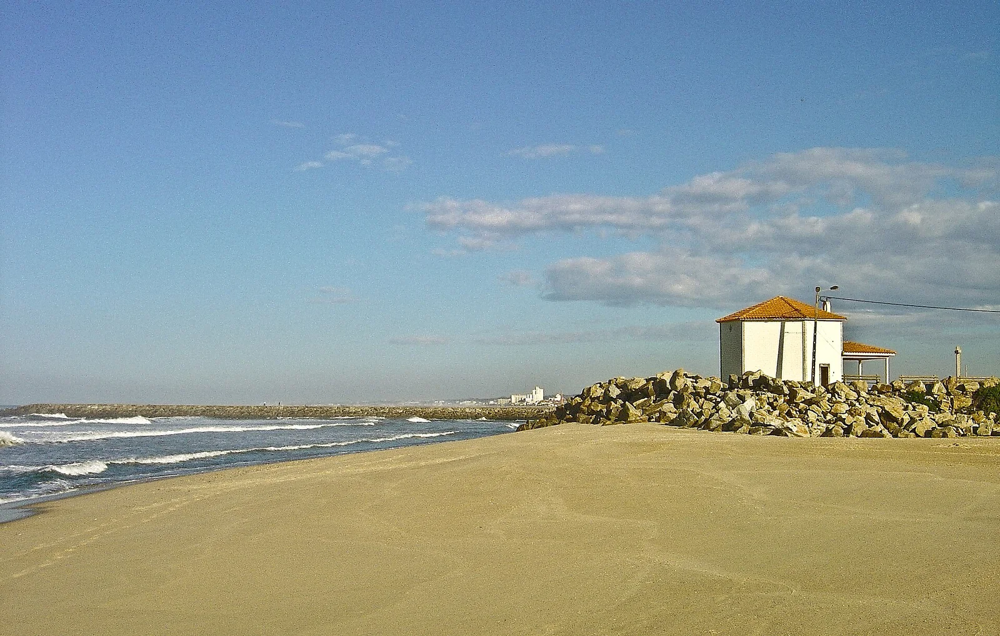

Praia de Espinho
Espinho, Portugal · surf

Le front de mer d’Espinho, au sud de Porto. Une adresse de surf de la côte nord portugaise.
- Lieu
- Espinho, Portugal
- Niveau
- Variable selon les conditions
- Activités
- surf
- Type d'eau
- Mer / océan
- Coordonnées
- 41.01, -8.65 (position approximative du secteur)
Ouvrir dans Ocean Buddy Télécharger sur l'App Store
Source : Visit Portugal.